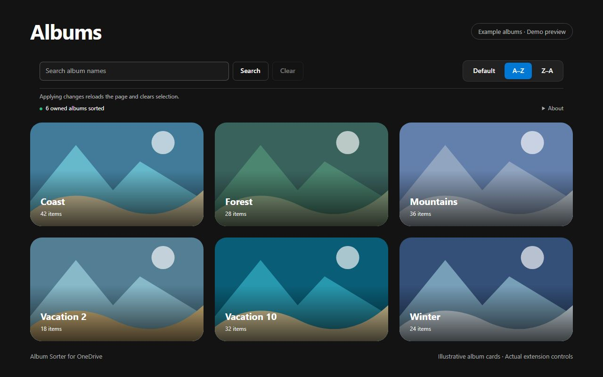

Natural alphabetical order
Numbers are compared naturally, so Vacation 2 comes before Vacation 10. Albums with matching names remain separate.
Free Chrome extension
Find the album you meant to open. Add natural A–Z and Z–A sorting to your own albums in OneDrive Personal.

A familiar place
Open Photos → Albums in OneDrive Personal. Choose A–Z or Z–A in the sorting bar. Your preference is saved and the page reloads. Choose Default to return to OneDrive’s original order. Enter part of an album name and choose Search to filter your owned albums. Choose Clear to show them all again. Applying or clearing a search reloads the page.

Numbers are compared naturally, so Vacation 2 comes before Vacation 10. Albums with matching names remain separate.
The extension reads continuation pages of the album list before sorting. It does not merely rearrange the cards currently on screen.
Your selected order stays in the current Chrome profile. It is not synchronized to other devices.
Only what sorting needs
Processed in your browserAlbum data is handled temporarily to sort the view. The developer receives none of it.
No changes to your albumsPhotos and server-side album records remain untouched.
One saved settingOnly the selected order is stored by the extension. No ads, analytics or license checks.
Full privacy policy →Your own albums in OneDrive Personal on onedrive.live.com. Shared albums and OneDrive for Business are not supported. The interface is in English.
Yes. Changing the order reloads the page and clears the current selection, just like a normal reload. After navigating within OneDrive, you may also need to reload manually.
The extension uses the album request observed in OneDrive Web. Changes to that interface may affect compatibility. If an error is detected while collecting albums, the original response is passed back to OneDrive.
Reading all album-list pages takes time and memory. Additional loading stops after 60 seconds. Concurrent changes to albums may affect the collection read during that time.
Voluntary support
Album Sorter for OneDrive is free. If you would like to support maintenance and future OneDrive compatibility, you can make a voluntary contribution. Donations do not unlock features.
Bring natural alphabetical order to your own OneDrive albums.
＋ Add to Chrome — it’s freeQuestions or compatibility issues?
Use the Support section of its Chrome Web Store listing for questions, bug reports and feature requests. Include your Chrome version, extension version and a description of the problem.
Support posts may be public. Do not include passwords, session tokens, private album exports or personal photos. For confidential inquiries, use the developer contact details shown in the store instead.
Open Chrome Web Store support ↗